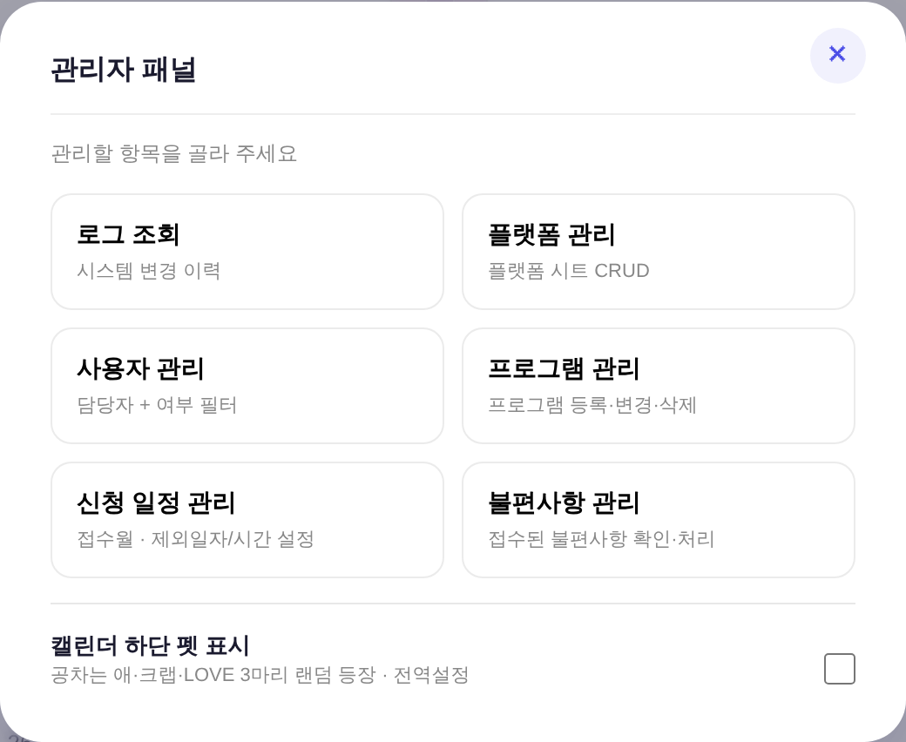
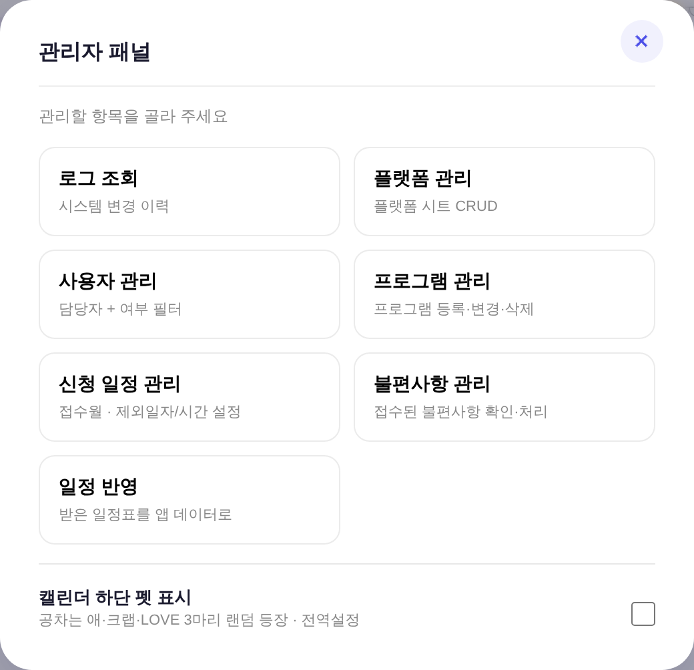
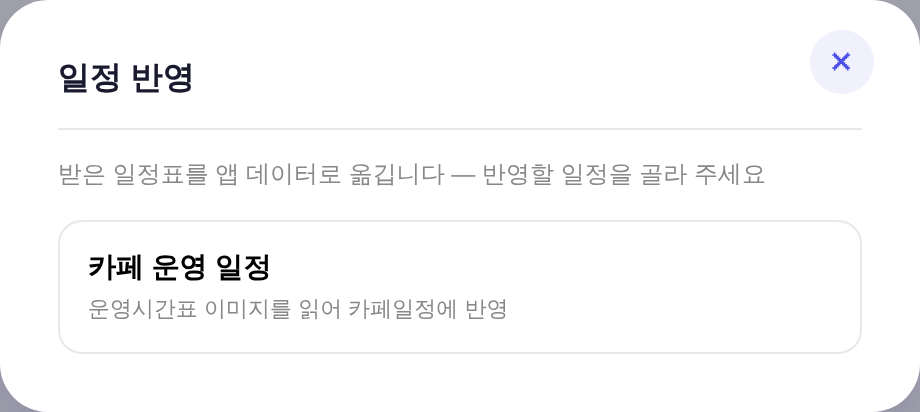
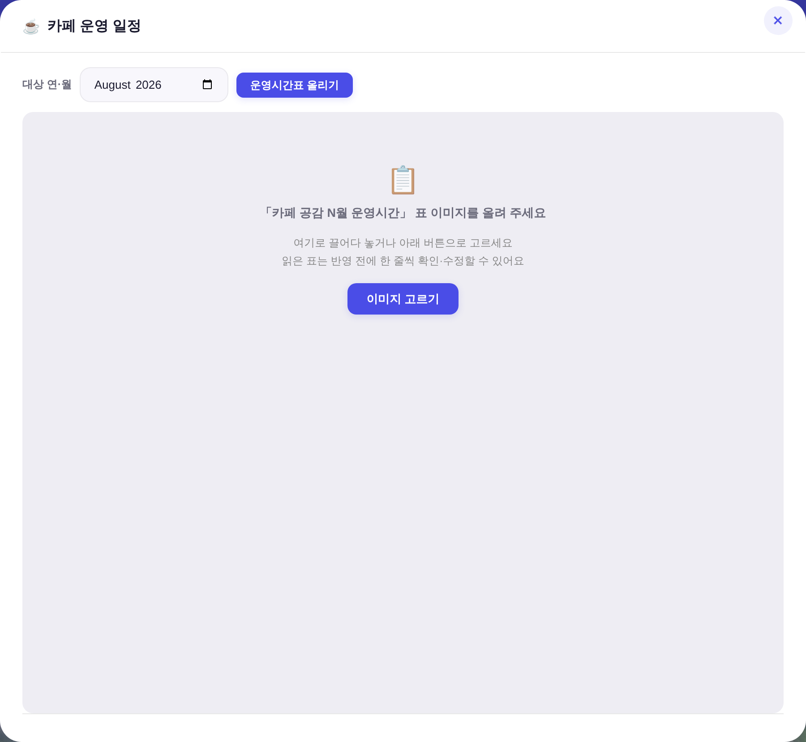
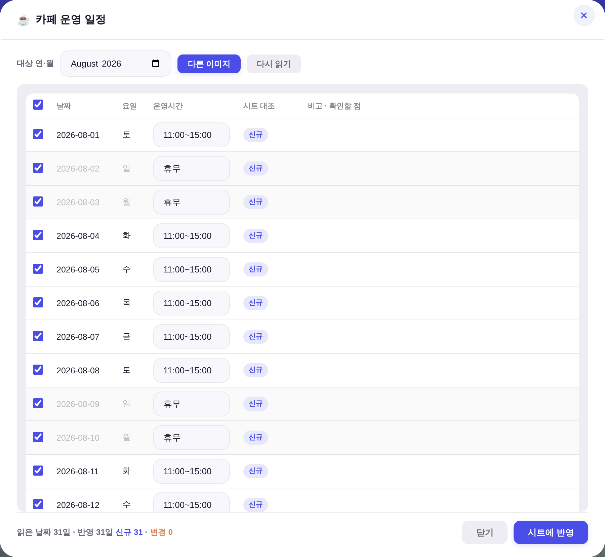
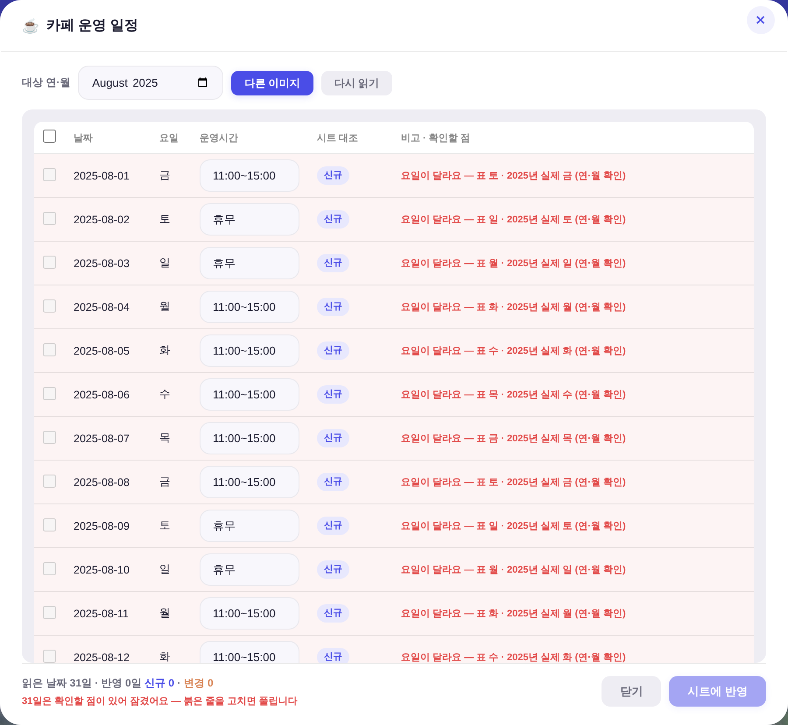
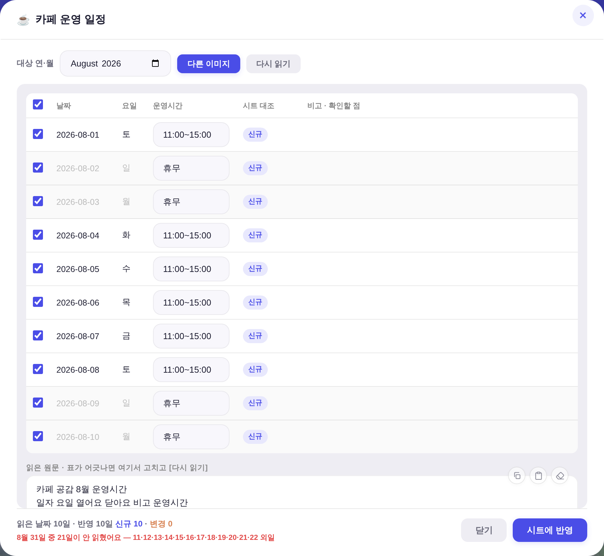

?qa=admin 목데이터 = 실API·실데이터·PII 미접촉). 대상 = index.html.
기존 관리 6종 뒤에 「일정 반영」 한 장이 붙는다. 카드 골격·여백·호버색 전부 기존 그대로 — 신규 형태 0. 톱니(관리) 드롭다운도 같은 순서로 항목이 하나 늘었다(구분선 위 데이터 관리 묶음의 마지막).


「그 안에 첫 번째 메뉴」 = 카페 운영 일정. 다음 일정표(장도 입도 시간 등)가 생기면 _CS_MENU 배열에 한 줄만 늘리면 된다.



POST /api/content/ocr. Worker 신설 0·시크릿 신설 0.docs/260703_cafe_july_ingest.mjs가 7월분에서 내린 판단과 같은 축 — 열 추가는 운영자 결정 사항).| 날짜 | 읽은 운영시간 | 비고(참고용) |
|---|---|---|
| 2026-08-01 토 | 11:00~15:00 | |
| 2026-08-02 일 | 휴무 | |
| 2026-08-15 토 | 휴무 | 광복절 |
| 2026-08-22 토 | 11:00~17:30 | [소]메타타악앙상블 17:00 |
| 2026-08-29 토 | 11:00~18:30 | 정명훈의 '로미오와 줄리엣' 17:00 - 인터미션 15분 |
| 2026-08-30 일 | 12:30~17:30 | [소]임산부를 위한 태교 음악회 14:00 / [대]라포엠의 Love Rhapsody 17:00 |
7월분을 넣던 스크립트(docs/260703_cafe_july_ingest.mjs)는 요일이 어긋나면 process.exit(1)로 중단했다.
그 판단을 화면으로 옮긴 것이 아래 두 검사다.


| 검사 | 근거 | 어긋나면 |
|---|---|---|
| 요일 대조 | 표의 요일 vs 실제 달력 요일 (표엔 연도가 없다) | 반영 차단(체크 불가) |
| 합계 대조 | 표의 「N시간 M분」 vs (닫아요 − 열어요) | 붉게 표시 · 고칠 때까지 대상 제외 |
| 형식·순서 | HH:MM~HH:MM / 휴무 · 닫는 시각 > 여는 시각 | 반영 차단 |
| 빠진 날짜 | 대상 월의 일수 vs 읽은 날짜 수 | 경고만(부분 반영은 정상 동작) |
| 중복 날짜 | 같은 날짜가 두 번 | 첫 행 유지 + 경고 |
POST /api/ops {mode:'append'} — 7월분 스크립트와 같은 경로. 기존 행 물리적 무접촉.| 항목 | 결과 |
|---|---|
| 대조 판정 | 동일 1 · 변경 1 · 신규 29 → 반영 대상 30일(동일 1일은 자동 제외) |
| 보낸 행 수 | 33행 (기존 4 + 신규 29) |
| 7월분 2행 | 운영시간·메모 그대로 보존 |
| 8/1 (동일·미선택) | 값·메모 무접촉 |
| 8/2 (변경) | 운영시간만 11:00~17:00 → 휴무 · 메모는 보존 |
| 여분 열 「메모」 | 헤더 3열 유지 · 신규 행은 빈칸 |
| 항목 | 결과 |
|---|---|
| 보낸 형태 | {sheet:'카페일정', mode:'append', rows:31} — 날짜·운영시간 2열만 |
| 시트 행 수 | 1 → 32 |
| 재조회 확인 | 31일 전건 일치 → 「시트에서 확인했어요」 |
check_design 1590/1590 유지. 상태색은 기존 역할칩 그대로(신규 --accent 틴트 · 변경 --peach-text 틴트 · 동일 --neutral · 경고 --danger-btn).
경고 행 배경은 --danger-btn alpha 변주(§3.5② · .btn--danger 그림자와 같은 성분).openHwpEditor 골격, 부품은 .modal·.modal-x·.btn·.nb-textarea·.u-empty.
메뉴 페이지는 openAdminPanel 카드 골격 그대로.data-noclip — 입력칸 클립(복사/붙여넣기 버튼)이 31줄에 붙어 표가 시끄러워지는 것 방지. 문서화된 탈출구 1속성(_CLIP_EXEMPT_SEL의 .inl-input 표 인라인 편집 면제와 같은 축).check_design ✓ · check_wiring ✓ · check_refs ✓ · smoke_layout PASS(1920×1080)..nb-* 뒤에 슬래시를 붙여 썼더니 별표+슬래시가 주석을 조기 종료해
바로 다음 규칙(.cs-stage) 한 줄이 통째로 삼켜졌다 → 모달 본문이 flex로 안 잡혀 하단 [시트에 반영] 버튼이 화면 밖으로 밀렸다.
게이트 4종은 전부 통과했으므로 헤드리스 실측이 아니었으면 못 잡았다. 같은 자리에 경고 주석을 남겼다.